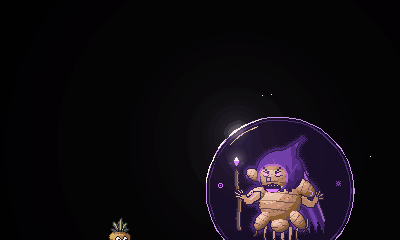
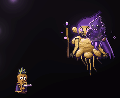
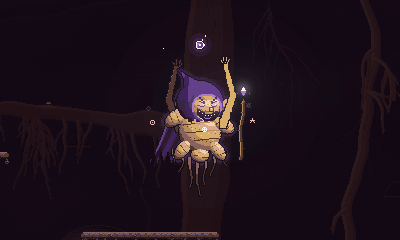
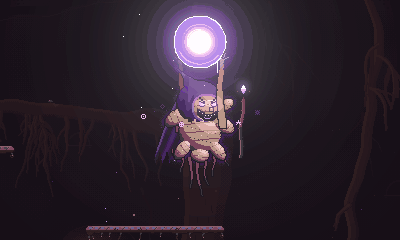

The Ginger
A flying ginger-root sorcerer that rules the burrow's hub. Its health comes in four segments; each key orb the squad brings back unlocks one, and the last is a desperate last stand where it charges a blast that wipes the squad unless they kill it in time.
An evil sorcerer made of a gnarled, knobbly ginger root, in a tattered purple hood and cape of root skin. It has branching root arms, glowing purple eyes, a floating staff tipped with a purple crystal and a ring of purple runes orbiting it. Comical-evil, not scary. It is the main boss of the Burrow Encounter, and it lives in the hub, the cavern where the squad starts and where the three key pedestals stand.
The whole encounter is built around it. It starts shielded and can't be hurt. Its health bar is split into four segments. Each boss room the squad clears drops a key orb; each orb placed on its hub pedestal unlocks the next segment. The fourth segment needs no orb: when the third is emptied it makes a last stand, charging a blast that downs the whole squad unless they finish it first. Its death opens the floor gate and ends the encounter.
Behaviour
The encounter spawns it as its main_boss the first time a player is in the hub, which is right
at the start, since the squad starts there. It floats about the hub's airspace and never leaves it:
its dangling roots hover 100 px above the floor under it, never closer than
40 px, and it keeps 16 px from the walls and ceiling. It drifts and wanders
lazily with a gentle bob. It only ever picks on players who are in the hub; anyone in a boss room or the tunnels is out of its reach. Touching it does no harm.
Immune phase
Until the first orb is placed, it is wrapped in a purple shield bubble (74 px around its middle). Three seals sit on top of the bubble, one per key colour; each placed orb breaks its seal. Shots on it show "IMMUNE" and do nothing, and its boss bar turns grey with "IMMUNE" after its name.
It hangs about the middle of the hub, wandering only 70 px either way, cackling every 6 s to 10 s. Every 2.6 s to 3.8 s it lobs 2 taunting purple bombs at players in the hub within 700 px of it. These land and explode like its full bombs (see below) but deal only 5 hp. It is a nuisance, not a fight: the point is to make the hub uncomfortable while the squad runs to the rooms.
Four segments
Its health is split at the floors in segment_floors (in the tunable parameters below, as fractions
of its full health, highest first; by default four equal quarters). Each floor is where it locks:
| Orbs placed | What the squad can take |
|---|---|
| None | Nothing: it's immune |
| One | Segment 1, down to the first floor |
| Two | Segment 2, down to the second floor |
| Three | Segment 3, down to the last floor |
| (none needed) | Segment 4, the last stand: everything that's left |
With unlock_all_at_first on (currently No), the first orb opens segments 1 to
3 at once, and it doesn't stop until the last floor.
When the squad shoots it down to the current floor, its health stops there and the shield bubble goes back up: hits show "IMMUNE" again. It keeps attacking while shielded. The next orb opens the next segment, the bubble shatters with a cackle, and the squad can carry on. Emptying segment 3 sets off the last stand straight away (see below).
So it can only die once all three orbs are placed, and then only by winning the last stand.
The transformation

The first placed orb sets it off. Over 2.4 s its runes spin up; 0.6 of the way through comes a white flash over the whole view, a ring of light and a roar, and the bubble shatters. It can't be hurt during the transformation. It makes its first full attack 1.2 s after.
Full boss mode
Now it drifts toward the players, sitting about 0.55 of the way from its spawn point to their average position, wandering up to 160 px to each side, at up to 60 px/s. Between attacks it waits 1.5 s to 2.3 s. It picks an attack at random each time, rarely the same one twice in a row.
It escalates with the segment its health is in. Each segment brings in new attacks:
| Segment | Its attacks |
|---|---|
| 1 | Bombs and bolt fans |
| 2 | Adds floor eruptions (from segment 2) and bolt spirals (from segment 2) |
| 3 | Adds the root sweep (from segment 3) and cluster bombs (from segment 3), and it enrages (from segment 3) |
| 4 | The last stand: it only charges (or, with last_stand_attacks, segment 1's attacks) |
And each segment after the first:
- Attack gaps are scaled by 0.85x again.
- Attacks grow: bombs per volley +1, bolts per fan +2, patches per eruption wave +1.
- In segment 3 eruptions come in 2 waves instead of 1.
Attacks
Bombs and cluster bombs
Telegraph: a purple bomb swells in its raised hand for 0.6 s.
It lobs a volley of 3 bombs (more each segment), 0.14 s apart, each in a high arc taking about 1.1 s. The first lands right at a player; the rest land up to 70 px to either side, spread across the players in the hub. A landed bomb flashes faster and faster for 0.85 s, then explodes: 8 hp to anyone within 26 px, with a strong knockback.
From segment 3 each bomb bursts into 4 bomblets as it explodes. They hop outward, land, and pop 0.5 s later for 5 hp each within 16 px.
Dodge: keep moving when the bomb appears in its hand. Watch where they land and get clear of the flashing ones; for cluster bombs, back well away, since the bomblets spray out past the first blast.
Bolt fans and spirals
Telegraph: the staff's crystal charges for 0.65 s, glowing and drawing in sparks, while it aims at a player.
Fans: 2 fans of 5 purple bolts (more each segment), 0.35 s apart, spread across 0.9 rad and aimed at its target. Every other fan is shifted by half a gap, so the gaps of the first fan are filled by the second.
Spiral (from segment 2, about half the time): for 2.4 s it fires a ring of 4 bolts from its body every 0.18 s, the ring wheeling round at 1.3 rad/s, so the bolts stream out in spinning arms at 105 px/s.
Each bolt deals 6 hp with a light knockback, flies at 150 px/s (fans) for up to 4.5 s, and stops at walls.
Dodge: fans are aimed where you are when they fire, so move sideways through the charge-up and jump or slip between the bolts. Spirals are a pattern: find a gap between two arms and drift with its rotation. Walls and floors block the bolts.
Floor eruptions

Telegraph: it raises its arms, and glowing rune circles appear on the floor, pulsing faster and faster for 1.05 s.
From segment 2. Each wave places 4 patches (more each segment), at least 62 px apart. About 0.4 of them go right under players; the rest are scattered within 460 px of the boss. When the pulsing ends each one erupts in a column of purple flame 84 px tall for 0.45 s: 10 hp and a big upward knock to anyone in it (once per patch). Later waves of a cast come 0.7 s apart, aim twice as many patches at players, and chase where they've moved to.
Dodge: step off any rune circle under you. There's room between patches, so a short step is enough; don't jump straight up, since the column reaches high.
Root sweep
Its signature attack, from segment 3.
Telegraph: it lifts its staff and the floor glows along the sweep's path for 0.95 s.
Then a wall of thorny roots tears out of the wall nearer the boss and across the whole width of the hub floor at 300 px/s. The wall is 26 px tall and 22 px thick. Touching its front deals 10 hp and throws you up and along its direction (once per sweep). It runs along the main floor under the boss, so players on higher ledges are above it.
Dodge: jump it (the carrot's jump easily clears it), dash through it, or wait it out on a ledge.
Enrage
As its health enters segment 3, it roars for 1.6 s (still hittable) and its body cracks with glowing magenta light. It stays cracked and glowing through the last stand, but these only apply until then:
- Attack gaps are scaled by 0.65x, wind-ups (telegraphs) by 0.85x, counts (bombs, bolts, eruption patches) by 1.4x, and its float speed by 1.35x.
- Each root sweep is followed by a second one from the other wall, 0.9 s later.
- Eruptions get one extra wave.
- Spirals come more often and fire a second set of arms wheeling the other way.
The last stand

When the squad empties segment 3 (its health reaches the last floor), it doesn't shield up: it makes its last stand. No orb is needed for this segment.
The intro (2.6 s): it rises over the middle of the hub, 40 px
higher than usual, and roars; a deep boom sounds, a ring of light bursts off it and the arena dims
around it (0.42 dark, with a dithered vignette closing in from the edges at
0.7). The boss, the carrots and the effects stay lit. Its boss bar switches to
"STOP THE CHARGE!" with a charge meter. If last_stand_intro_immune is on (currently
Yes) it can't be hurt during the intro. The Ginger Shade is gone by now:
it dissolves as the last stand begins.
The charge (40 s): with both hands raised it feeds an orb of purple energy over its
head, growing to a radius of 30 px, its bands wheeling faster and lightning
crackling out of it. A hum throbs faster and higher (from every 1.1 s to every
0.22 s), the screen shakes harder (from 0.15 to
0.55), bits of the floor lift off and drift up toward it (up to
40 /s a second), and its runes spin up to 4x times faster. It
is fully vulnerable the whole time. With last_stand_attacks off (currently
No) it only charges; on, it keeps using segment 1's attacks, with the gaps
scaled by 1.8x.
Killed in time: the orb implodes over 0.7 s, sparks sucked into it until it winks out with a soft pop, while The Ginger cracks apart in its usual death. The light comes back over 1.6 s.

The charge completes: the orb goes off in a white-out flash (up to 0.85) and a purple blast wave sweeps out at 1100 px/s. Each carrot goes down as the wave reaches it, whatever it's doing: no dodge, shield or health saves it. With the whole squad down, the usual squad-wipe restart follows; until then The Ginger hovers over them, cackling.
Death
It dies in a cracking, flashing explosion of ginger chunks, its hood fluttering down over 4 s. Any bombs, bomblets and unfired eruptions it left fizzle out harmlessly, and sweeps that haven't started yet are called off. Its death opens the floor gate, ending the encounter.
The boss bar
Its name and a big health bar show at the bottom of the screen while it's alive, like every boss's (several bosses stack upward); see Enemy names and boss bars. Dividers mark its segment floors. Within a segment it's an ordinary bar going down; at a floor the whole bar locks, with a padlock where the health stopped, until the next orb. In the last stand a charge meter sweeps across above its name, and the name blinks to a warning.
The Ginger Shade
As soon as it appears, it brings in the Ginger Shade, its immune spectral projection, which haunts the boss room the squad is fighting in. The rooms are done by the last stand, so the shade dissolves as it begins (or when The Ginger dies, whichever comes first).
Strategy
- Don't fight it first: it can't be hurt. Head out to the three boss rooms and clear them. Leaving a player in the hub only gives it a target for its bombs.
- Bring orbs back quickly. Each carrier holds one orb at a time, and a carrier who goes down drops theirs where they fell, so escort the carrier through the hub.
- Each segment brings harder attacks. A squad can place an orb, burn that segment, then go for the next room; or clear all three rooms first and fight it in one go.
- Burst it right after each orb goes on: the bubble breaks and its health is open again.
- When it reaches a floor and shields up, stop shooting and go for the next orb; it keeps attacking, so don't hang about.
- Watch its hands and staff: a bomb in the hand means move, a glowing crystal means bolts, raised arms mean runes on the floor, a raised staff means jump.
- Save dashes for the enraged double sweep and dense eruptions.
- Save your burst for the last stand. Dodging doesn't matter there: only damage does. Everyone on their best damage, rockets and grenades included, and don't waste time reloading late.
Headshots
Its head box is the face in its hood's opening: near the top of its body, a little forward on the side it's facing. Everywhere else on the knobbly root body counts as a body shot.
Co-op
The host runs its AI and movement and streams its phase, shield, open segments, charge and whether it went off to everyone, so every machine agrees on when it's immune and how far the charge is, including a player who joins mid-charge. The transformation, each shield change, each attack, the enrage, the last stand's start and the wipe are events every machine plays out; on the wipe, each machine downs only its own carrot as the wave reaches it. Bombs, eruptions and sweeps are flown by every machine, and each machine checks only its own carrot, so a hit always matches what that player saw. Dash i-frames dodge everything.
It only targets players in the hub, so a squad split between the hub and a boss room fights two fights at once: The Ginger in the hub and the room boss (plus the Ginger Shade) in the room.
Testing
force_placed (currently -1) is a knob for the owner: set it to 0 to 3 and The Ginger
acts as if that many orbs were placed, to try each segment without carrying orbs. At -1 it reads the
encounter's real pedestals. Outside an encounter (the arena) it always counts all three, so segments
1 to 3 are open straight away.
force_last_stand (currently No) jumps straight into the last stand as soon as it
appears (its health drops to the last floor), to test the charge, the kill and the wipe.
For now it's tuned to be easy, for testing: its health (1200 hp), its attacks' damage and the long charge are all marked "(test-easy)" in the stats, with what the real fight wants beside each.
Appearances
- Burrow Encounter: the main boss, in the hub. The three room bosses, Sweet Potato, Red Corn and Ghost Pepper, each drop a key orb that goes on a hub pedestal; those orbs unlock The Ginger.
Design notes
Its health is gated by the orbs in the style of a Destiny raid boss: the room fights aren't side quests, they are how you damage the main boss. The locked chunk on the bar and the three seals on the bubble show the squad what to do without words. Re-shielding at each floor stops a strong squad from skipping the rooms, and each segment adds attacks, so every orb raises the stakes. The last stand is the climax: a pure damage check against a clock, readable at a glance (the dark, the hum, the orb, the meter), with the whole squad's fate on it. Its pressure in the hub (bombs even while immune) and the Ginger Shade in the rooms keep both halves of a split squad busy.
Its enrage comes in with segment 3, so the fight peaks with the sweep, cluster bombs and enrage just before the last stand, then drops into the quiet, dark charge.
Tunable parameters
These are read straight from the game's files, so they are always the current values. Open the file in the Godot Inspector to change them.
Stats
Edit styles/enemies/ginger.tres · fields defined in scripts/enemy_stats/ginger_stats.gd
| Parameter | Value | Range | What it does |
|---|---|---|---|
| Health | |||
hp | 1200 hp | 1 to 20000 | Hit points. (test-easy: the real fight wants about 3000.) |
hit_push | 5 px/s | 0 to 150 | How hard a bullet shoves it sideways (it drifts back). |
segment_floors | PackedFloat32Array(0.75, 0.5, 0.25) script default PackedFloat32Array([0.75, 0.5, 0.25]) | Its health bar's segments: the fractions of its health where it locks, highest first (each 0..1). The default, [0.75, 0.5, 0.25], is four equal quarters. Orb 1 unlocks segment 1 (down to the first floor), orb 2 segment 2, orb 3 segment 3 (down to the last floor). It shields up at each floor until the next orb. Emptying the segment above the LAST floor starts the last stand (the final segment: no orb needed). Empty: no floors and no last stand (the first orb unlocks all of it). | |
unlock_all_at_first | No | Unlock segments 1 to 3 at once at the first placed orb: it stops at no floor on the way down to the last one, where the last stand begins. | |
| Testing | |||
force_placed | -1 | -1 to 3 | 0 or more: pretend this many orbs are placed (to test the phases without carrying orbs). -1 reads the encounter (or, with no encounter, counts as all three). |
force_last_stand | No | Jump straight into the last stand as soon as it appears (its health drops to the last floor), to test the charge and the wipe without carrying orbs. | |
| Float | |||
float_speed | 60 px/s | 0 to 400 | Top drifting speed while it hovers about the hub. |
float_accel | 110 px/s² | 1 to 1000 | How quickly it changes its drift (lower is floatier). |
hover_height | 100 px | 0 to 400 | How high its dangling roots hover above the floor below it. |
hover_min | 40 px | 0 to 200 | The roots never sink closer than this to the floor. |
wall_margin | 16 px | 0 to 200 | How far it keeps from the hub's walls and ceiling. |
follow | 0.55 | 0 to 1 | How much it drifts toward the players (0 stays over its spawn point, 1 hovers right over them). |
wander_x | 160 px | 0 to 600 | A lazy wander around that spot: how far sideways and up and down, and how fast. |
wander_y | 30 px | 0 to 150 | |
wander_speed | 0.06 Hz | 0 to 3 | |
bob_amp | 3 px | 0 to 20 | The float's bob: height and speed. |
bob_speed | 2 rad/s | 0 to 10 | |
| Immune phase | |||
idle_wander_x | 70 px | 0 to 600 | Before any orb is placed it hangs about the middle of the hub, wandering only this far. |
idle_bomb_gap_min | 2.6 s | 0.2 to 20 | Time between its taunting bomb lobs (random in range). |
idle_bomb_gap_max | 3.8 s | 0.2 to 20 | |
idle_bomb_count | 2 | 1 to 10 | Bombs per taunting lob. |
idle_bomb_damage | 5 hp | 0 to 100 | A taunting bomb's damage (its blast radius is bomb_radius). (test-easy: the real fight wants about 10.) |
idle_bomb_range | 700 px | 50 to 2000 | It only lobs at players within this distance of it. |
cackle_gap_min | 6 s | 1 to 30 | Time between its cackles (random in range). |
cackle_gap_max | 10 s | 1 to 30 | |
| Transformation | |||
transform_time | 2.4 s | 0.2 to 6 | The transformation into full boss mode at the first placed orb (it can't be hurt meanwhile). |
transform_burst | 0.6 | 0 to 1 | When the big flash and roar hit, as a fraction of transform_time. |
| Pacing | |||
first_attack | 1.2 s | 0 to 10 | Time before its first attack after the transformation. |
attack_gap_min | 1.5 s | 0 to 10 | Time between attacks (random in range). |
attack_gap_max | 2.3 s | 0 to 10 | |
tier_gap | 0.85x | 0.3 to 1 | Attack gaps scale by this for each segment after the first (the segment its health is in). |
recover | 0.5 s | 0 to 3 | Recovery after an attack before it drifts on. |
| Bombs | |||
bomb_wind | 0.6 s | 0 to 3 | Conjuring a volley (the telegraph: a bomb swells in its raised hand). |
bomb_count | 3 | 1 to 20 | Bombs per volley in boss mode, plus this many more per segment after the first. |
bomb_count_per_tier | 1 | 0 to 10 | |
bomb_stagger | 0.14 s | 0 to 1 | Time between bombs within a volley. |
bomb_flight | 1.1 s | 0.3 to 3 | Flight time of a lobbed bomb, and the gravity on it. |
bomb_gravity | 520 px/s² | 50 to 2000 | |
bomb_spread | 70 px | 0 to 300 | How far from the player each bomb lands (random either side). |
bomb_fuse | 0.85 s | 0.1 to 3 | Landed, it flashes faster and faster for this long, then explodes. |
bomb_radius | 26 px | 4 to 120 | Blast radius, damage (test-easy: the real fight wants about 18) and knockback. |
bomb_damage | 8 hp | 0 to 100 | |
bomb_knock | 260 px/s | 0 to 800 | |
cluster_from | 3 | 1 to 4 | Cluster bombs start in this segment (each splits into bomblets when it pops; 4: never). |
cluster_count | 4 | 0 to 12 | Bomblets per cluster bomb, how hard they burst out, their fuse once landed. |
cluster_speed | 140 px/s | 0 to 400 | |
cluster_fuse | 0.5 s | 0.05 to 3 | |
cluster_radius | 16 px | 2 to 80 | A bomblet's blast radius and damage (test-easy: the real fight wants about 10). |
cluster_damage | 5 hp | 0 to 100 | |
| Bolts | |||
bolt_wind | 0.65 s | 0 to 3 | Charging the staff's crystal (the telegraph: it glows and draws in sparks). |
fan_count | 5 | 1 to 30 | Bolts in an aimed fan, plus this many more per segment after the first. |
fan_count_per_tier | 2 | 0 to 10 | |
fan_spread | 0.9 rad | 0 to 3.14 | The fan's total width. |
fan_volleys | 2 | 1 to 6 | Fans per bolt attack (one after another). |
fan_gap | 0.35 s | 0.05 to 2 | |
bolt_speed | 150 px/s | 20 to 600 | Bolt speed, damage (test-easy: the real fight wants about 12), knockback and how long it flies. |
bolt_damage | 6 hp | 0 to 100 | |
bolt_knock | 160 px/s | 0 to 800 | |
bolt_life | 4.5 s | 0.5 to 10 | |
spiral_from | 2 | 1 to 4 | The spiral (from this segment; 4: never): arms of bolts wheeling out of it for spiral_time. |
spiral_time | 2.4 s | 0.2 to 8 | |
spiral_every | 0.18 s | 0.05 to 1 | |
spiral_arms | 4 | 1 to 12 | |
spiral_turn | 1.3 rad/s | 0 to 6 | |
spiral_speed | 105 px/s | 20 to 600 | |
| Floor eruptions | |||
erupt_from | 2 | 1 to 4 | Eruptions start in this segment (4: never). |
erupt_wind | 1.05 s | 0.2 to 3 | The telegraph: glowing runes on the floor pulse faster and faster for this long, then explode. |
erupt_count | 4 | 1 to 20 | Patches per wave, plus this many more per segment after the first. |
erupt_count_per_tier | 1 | 0 to 10 | |
erupt_chase | 0.4 | 0 to 1 | The fraction of patches put right under a player (the rest are scattered round the hub). |
erupt_spread | 460 px | 50 to 1500 | How far from the boss the scattered patches go (either side). |
erupt_radius | 20 px | 4 to 80 | Half-width of a patch, and the least space between patch centres. |
erupt_spacing | 62 px | 10 to 300 | |
erupt_height | 84 px | 10 to 300 | How tall the purple flame column is, and how long it burns. |
erupt_time | 0.45 s | 0.05 to 2 | |
erupt_damage | 10 hp | 0 to 100 | Damage (test-easy: the real fight wants about 22) and knockback (mostly up). |
erupt_knock_x | 120 px/s | 0 to 800 | |
erupt_knock_y | 380 px/s | 0 to 900 | |
erupt_waves | 1 | 1 to 6 | Waves per cast (later waves chase where the players are by then), the waves in segment 3, and the time between them. |
erupt_waves_tier3 | 2 | 1 to 6 | |
erupt_wave_gap | 0.7 s | 0.1 to 3 | |
| Root sweep | |||
sweep_from | 3 | 1 to 4 | The sweep starts in this segment (4: never). |
sweep_wind | 0.95 s | 0.2 to 3 | The telegraph: the floor glows along the sweep's path while it raises its staff. |
sweep_speed | 300 px/s | 30 to 1200 | How fast the wall of roots tears along the floor. |
sweep_height | 26 px | 4 to 120 | How tall the roots stand (the carrot's jump clears about 70 px), and how thick the wall is. |
sweep_width | 22 px | 4 to 120 | |
sweep_damage | 10 hp | 0 to 100 | Damage (test-easy: the real fight wants about 20) and knockback. |
sweep_knock_x | 220 px/s | 0 to 800 | |
sweep_knock_y | 300 px/s | 0 to 900 | |
sweep_double_gap | 0.9 s | 0 to 3 | Enraged, a second sweep follows from the other wall this long after the first. |
| Shield | |||
shield_radius | 74 px | 20 to 200 | The bubble's radius around its middle (it goes up while it's immune). |
shield_alpha | 0.16 | 0 to 1 | How opaque the bubble's fill is. |
shield_glow | 1.6 | 0 to 6 | The bubble's bloom. |
| Enrage | |||
enrage_from | 3 | 1 to 4 | It enrages as its health enters this segment (4: never). It stays enraged (cracked and glowing) through the last stand, but the numbers below only apply before it. |
roar_time | 1.6 s | 0 to 5 | The enrage roar (it hangs there howling; still hittable). |
enrage_gap | 0.65x | 0.1 to 2 | Once enraged: attack gaps scale by this... |
enrage_wind | 0.85x | 0.3 to 2 | ...wind-ups (telegraphs) by this... |
enrage_count | 1.4x | 1 to 3 | ...counts (bombs, bolts, patches) by this... |
enrage_speed | 1.35x | 0.1 to 3 | ...and its float speed by this. |
| Last stand | |||
last_stand_intro | 2.6 s | 0.2 to 8 | The intro as the last stand begins: it rises, roars and the arena dims; then the charge starts. |
last_stand_intro_immune | Yes | It can't be hurt during the intro (the charge itself is always fully vulnerable). | |
last_stand_time | 40 s | 3 to 120 | How long the charge takes: kill it before then, or the blast downs the whole squad. (test-easy: generous; a tense real fight wants about 20 to 25.) |
last_stand_attacks | No | Keep attacking while it charges (the light set: segment 1's attacks, spaced out by last_stand_gap). Off: it only charges, so the test is purely "can we do the damage". | |
last_stand_gap | 1.8x | 0.5 to 5 | With last_stand_attacks on: attack gaps scale by this. |
last_stand_rise | 40 px | 0 to 200 | How much higher than its usual hover it rises for the charge (it stays under the ceiling). |
last_stand_orb_size | 30 px | 6 to 80 | The orb of energy over its head: its radius at full charge, and its glow. |
last_stand_orb_glow | 1.8 | 0 to 6 | |
last_stand_dim | 0.42 | 0 to 1 | How dark the arena gets around it (0 none, 1 black), and the darker vignette round the view's edge. |
last_stand_vignette | 0.7 | 0 to 1 | |
last_stand_undim | 1.6 s | 0.1 to 5 | How long the dimming takes to clear after it dies. |
last_stand_shake_start | 0.15 | 0 to 1 | Screen shake through the charge: at its start and at full charge. |
last_stand_shake_end | 0.55 | 0 to 1 | |
last_stand_debris | 40 /s | 0 to 200 | Bits of debris lifting off the floor each second at full charge (fewer early on). |
last_stand_hum_gap_start | 1.1 s | 0.1 to 3 | The hum: the time between its pulses at the start of the charge and at full charge (its pitch rises as it goes). |
last_stand_hum_gap_end | 0.22 s | 0.05 to 3 | |
last_stand_rune_spin | 4x | 0 to 20 | How much faster its runes spin at full charge (on top of their enraged spin). |
fizzle_time | 0.7 s | 0.1 to 3 | Killed mid-charge: how long the orb takes to implode and fizzle out. |
wipe_speed | 1100 px/s | 100 to 5000 | The wipe: how fast its blast wave sweeps out (it downs each carrot as it reaches it), the white-out flash (0 none, 1 full) and the shake. |
wipe_flash | 0.85 | 0 to 1 | |
wipe_shake | 1 | 0 to 1 | |
| Juice | |||
flash_bright | 1.35x | 1 to 4 | Hit flash: how bright, how long, and at most how many a second. |
flash_time | 0.05 s | 0 to 0.5 | |
flash_rate | 4 /s | 0.5 to 20 | |
glow | 1.3 | 0 to 6 | The sorcerous aura: bloom intensity, pulse, opacity. |
glow_pulse | 0.3 | 0 to 2 | |
glow_alpha | 0.35 | 0 to 1 | |
eye_glow | 2.6 | 0 to 6 | The eyes', the runes', the staff crystal's, the bombs' and the eruptions' glow. |
rune_glow | 1.9 | 0 to 6 | |
crystal_glow | 2.4 | 0 to 6 | |
bomb_glow | 2 | 0 to 6 | |
erupt_glow | 2.2 | 0 to 6 | |
erupt_pop_glow | 1.4 | 0 to 6 | The flash as each eruption bursts: brightness (several at once bloom a lot) and size (x its radius). |
erupt_pop_size | 0.6 | 0 to 2 | |
view_flash | 0.4 | 0 to 1 | The full-view flash at the transformation and the death (0 none, 1 white-out). |
shake_bomb | 0.3 | 0 to 1 | Screen shake: a bomb, an eruption, the sweep, the shield, the transformation, the death. |
shake_erupt | 0.35 | 0 to 1 | |
shake_sweep | 0.3 | 0 to 1 | |
shake_shield | 0.4 | 0 to 1 | |
shake_transform | 0.8 | 0 to 1 | |
shake_death | 1 | 0 to 1 | |
death_time | 4 s | 1 to 10 | How long the death lasts (the cracking, the explosion, the hood drifting down). |